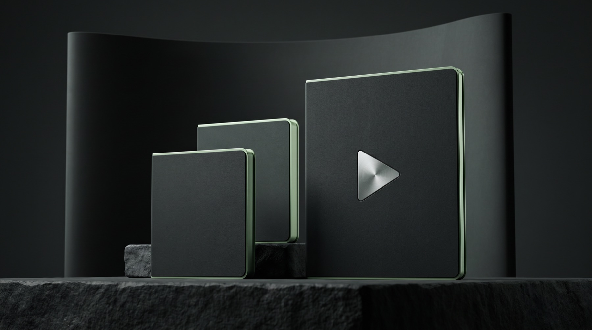

Escribe «empezar»
Abres la carpeta del kit en Claude Code o Codex y escribes «empezar». El kit revisa tu computador e instala lo que falta. No necesitas saber programar.
PARA QUIENES GRABAN A CÁMARA EN ESPAÑOL
Video Editor Kit es tu editor de video en español que aprende cómo editas tú. Trabaja en tu computador, en Claude Code o Codex. Le pides «edita este video»: el kit quita pausas y tomas repetidas, y subtitula sin taparte la cara. Lo entrega para Reels, TikTok, Shorts o YouTube. Tú revisas y apruebas.
Solo 30 cupos a este precioPago únicoGarantía de 15 díasDescarga inmediata
LO QUE PASA DESPUÉS DE GRABAR
Grabaste en un rato. Lo demás se llevó la noche: escuchar cada pausa, cortar las tomas que repetiste, escribir los subtítulos, moverlos para que no te tapen la cara, exportar… y descubrir que el audio quedó bajito. Otra vez.
Cuando terminas, ya no quedan ganas de grabar el siguiente. Publicas menos, publicas tarde o publicas algo que no te convence. Y cada semana así es una semana en la que tu audiencia ve los videos de otro.
Y las soluciones de siempre también te cobran. Una app de edición se renueva cada año. Un editor te cobra cada video y entrega a su ritmo, no al tuyo.
CÓMO APRENDE TU ESTILO
Abres la carpeta del kit en Claude Code o Codex y escribes «empezar». El kit revisa tu computador e instala lo que falta. No necesitas saber programar.
Tuyos o con el ritmo que buscas. Los mide en tu computador: cortes por minuto, pausas, ritmo al hablar y estilo de subtítulos. Te muestra en español lo que aprendió, en un resumen que puedes leer y cambiar.
Aplica tu perfil de estilo y te muestra el resultado antes de exportar. ¿Corriges algo? Te pregunta «¿siempre así?» y lo guarda en tu perfil para los siguientes videos.
Un perfil por cada creador o cliente. Y tu material se edita en tu computador: no tiene que subirse a un servicio de edición.
QUÉ EDITA
Sin pausas ni tomas repetidas, con gráficos para formato corto y subtítulos en español que no te tapan la cara, dentro de la zona segura de Instagram. Una versión para cada plataforma, con el volumen parejo (−14 LUFS).
Quita pausas, tiempos muertos y tomas repetidas, nivela el audio y te entrega la versión para YouTube con el MP4 final verificado.
Convierte un video largo en varios clips verticales con subtítulos. Una sola grabación, varias publicaciones.
El formato se detecta solo: vertical → corto; horizontal → YouTube. Edición completa de verticales y de YouTube probada de principio a fin en Mac, Windows y Linux. No necesitas ninguna app de edición; si usas Premiere Pro, DaVinci Resolve, CapCut o Final Cut Pro, el kit incluye rutas para terminar ahí.
¿POR QUÉ NO HERRAMIENTAS GRATIS, UNA APP O UN EDITOR?
Hay complementos gratis para editar con Claude Code (se llaman skills), casi todos en inglés, y el flujo lo armas tú, pieza por pieza. Las apps te cobran cada año. Un editor, cada video. Video Editor Kit llega armado, en español, aprende tu estilo y se paga una vez.
LO QUE TE CUESTA EDITAR HOY
Submagic Pro (US$276), Descript Creator (US$288) o CapCut Pro (US$180), en plan anual. Y al año siguiente, otra vez.
8 reels al mes en Latinoamérica: desde US$5 por reel en plataformas de trabajo independiente hasta US$50 o más si el editor tiene experiencia. Todos los meses. Y publicas cuando te entregan, no cuando quieres.
Un solo pago por el kit: sin mensualidad ni cobro por video. Lo usas en tus videos y en los de tus clientes. Aparte, tu plan de Claude (desde unos US$20/mes) o de ChatGPT, que quizá ya pagas.
Precios públicos consultados el 25/09/2026, en USD y redondeados: planes anuales de cada app y tarifas de editores en plataformas de trabajo independiente de Latinoamérica.
LO QUE RECIBES

Todo el flujo de edición, ya armado. Transcribe en español, corta, subtitula y añade gráficos a los formatos cortos. Nivela el audio y exporta una versión por plataforma, con el MP4 verificado.
Un perfil por creador o cliente, y una plantilla que llenas una vez con tus colores, tus fuentes y tu voz.
Paso a paso y en español, con instrucciones para copiar. Te lleva del ZIP a tu primer video exportado.
El asistente responde con la documentación del kit. Y si algo se traba, nos escribes.
Con fondo transparente, para tus videos. Y además, instrucciones para Claude Code y Codex.
Solo para los primeros 30: aprende conmigo a crear agentes de IA como este. La reservas con el enlace que llega en tu correo de compra.
¿ES PARA TI?
Un computador Mac, Windows o Linux, unos 10 GB libres y un plan de pago de Claude para usar Claude Code (desde unos US$20/mes) o de ChatGPT para Codex. Nada de programar: le hablas en español.
PRECIO FUNDADOR · SOLO 30 CUPOS
¿Por qué más barato? Porque si eres de los primeros 30, te pido algo a cambio: tu opinión honesta después de tu primera edición. Gumroad cierra este precio en la venta 30 y yo actualizo el contador cada día con las ventas reales. Si llegas después, pagas US$40 más y te quedas sin la llamada 1 a 1.
Bono fundador: una llamada 1 a 1 de 30 minutos conmigo, Alejandro, para aprender a crear agentes de IA como este editor. La reservas con el enlace que llega en tu correo de compra. El soporte del kit va por correo; esta llamada es para que aprendas a crear los tuyos. Se acaba con el último cupo.
Pago único · sin mensualidad del kit
Pago procesado por Gumroad. Descargas el kit desde tu recibo, justo después de pagar.
ANTES DE COMPRAR
No. Abres la carpeta del kit en Claude Code o Codex, escribes «empezar» y desde ahí le hablas en español, como le hablarías a tu editor: «edita este video». El kit revisa tu computador e instala lo que falte, y la guía visual te lleva paso a paso con instrucciones para copiar y pegar.
Sí. No le describes tu estilo: le das de 1 a 3 videos que te gusten y mide sus cortes por minuto, sus pausas, el ritmo al hablar y los subtítulos. Te lo resume en español para que lo leas y lo ajustes. Y cada vez que corriges algo y confirmas «siempre así», lo recuerda.
La edición completa de videos verticales y de YouTube está probada de principio a fin en Mac, Windows y Linux. Necesitas unos 10 GB libres. Al escribir «empezar», el kit revisa tu equipo e instala lo que falte. ¿Grabas con iPhone? El kit convierte el HDR a colores normales y lee la rotación. Y si no logras exportar tu primer video, te cubre la garantía de primera edición de 15 días.
Con Claude, lo usas en Claude Code (plan de pago de Claude, desde unos US$20/mes). Con ChatGPT, en Codex (plan de pago de ChatGPT). No es el chat del navegador: abres la carpeta del kit en tu computador y le pides la edición en español. Codex: adaptación incluida; la prueba completa está en curso.
Solo tu plan de Claude (desde unos US$20/mes) o de ChatGPT, si no lo tienes ya. La transcripción corre en tu computador con WhisperX: sin claves de API ni cobro por minuto. No necesitas ninguna app de edición; si ya usas Premiere Pro, DaVinci Resolve, CapCut o Final Cut Pro, el kit incluye rutas para terminar ahí.
Haz la cuenta. Un año de Submagic Pro, Descript Creator o CapCut Pro cuesta entre US$180 y US$290. Un editor en Latinoamérica cobra de US$5 a US$50 o más por reel, todos los meses. El kit se paga una vez y lo usas en todos tus videos, sin cobro por video ni por minuto; solo necesitas tu plan de Claude o ChatGPT, que quizá ya pagas. Y cada corrección que confirmas queda guardada en tu perfil.
Los complementos gratis (skills) existen, casi todos en inglés, y el flujo lo armas tú: instalar, conectar, probar y arreglar lo que falla. Una app se paga cada año y un editor cobra cada video. El kit llega armado, en español, trabaja en tu computador y aprende cómo editas tú, con un solo pago.
Lo descargas apenas pagas. Instalarlo son 3 pasos: descargas el ZIP desde tu recibo, lo descomprimes y abres la carpeta video-editor en Claude Code o Codex para escribir «empezar». El kit revisa tu computador e instala lo que falte. La primera edición descarga una sola vez unos 4,3 GB de modelos; las siguientes reutilizan lo descargado.
Sí. Puedes editar material tuyo o de tus clientes y guardar un perfil de estilo para cada uno. Así cada cliente conserva su ritmo y sus subtítulos sin que tengas que explicarlo de nuevo en cada video.
Te cubre la garantía de primera edición de 15 días: si sigues la guía con un clip tuyo de 20–60 s y no logras exportar tu primer video, escríbenos; te ayudamos y, si no lo resolvemos, te devolvemos el dinero. Además tienes el asistente de ayuda y soporte por correo.
PIÉNSALO ASÍ
Imagina la próxima semana: grabas, escribes «edita este video», revisas y publicas. Sin abrir una app de edición. Sin esperar a nadie. O imagina que todo sigue igual: otra noche cortando pausas, otra renovación de tu app de edición, otro video que sale tarde. Solo hay 30 cupos a US$97. Cuando se acaben, el kit sube a US$137 y la llamada 1 a 1 se va con ellos.
Quiero mi editor por US$97 ↓Pago único · Garantía de 15 días · Descarga inmediata desde Gumroad